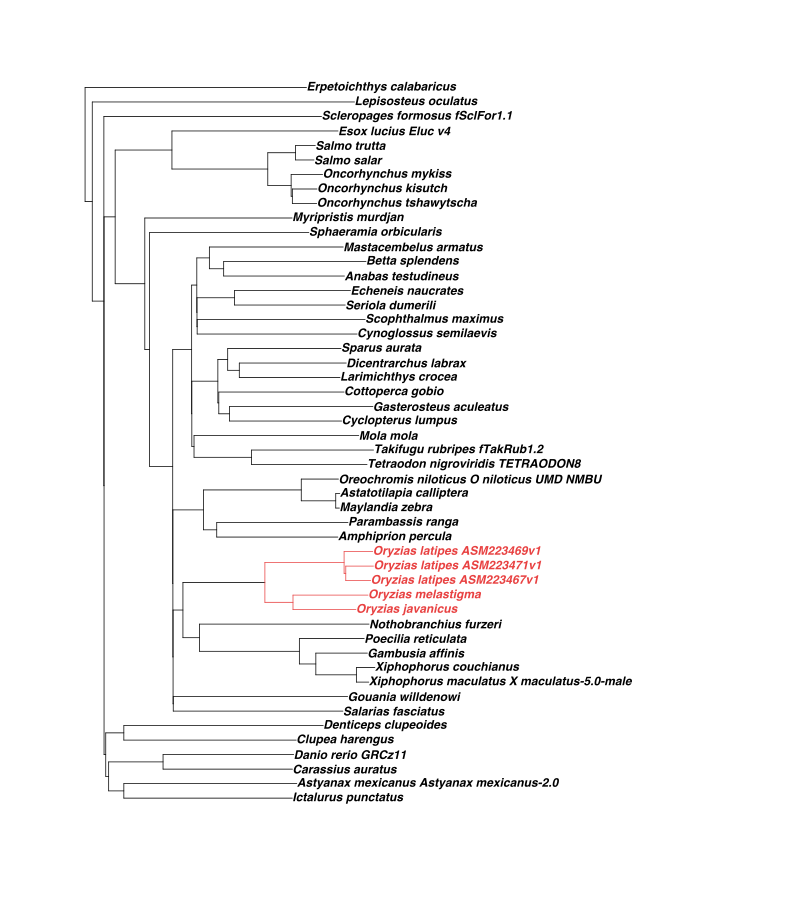
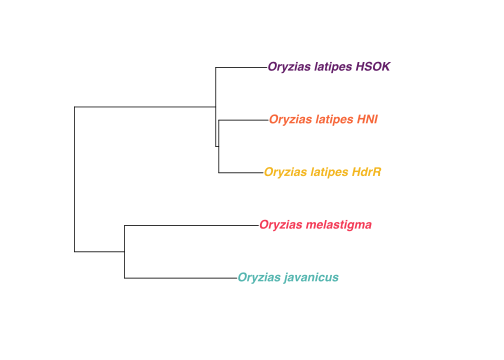
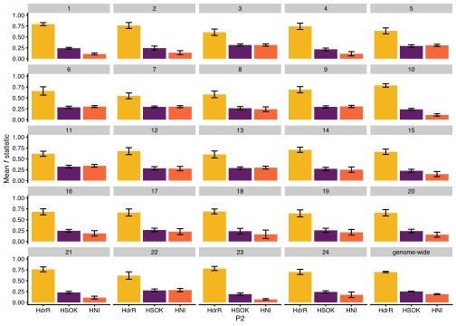
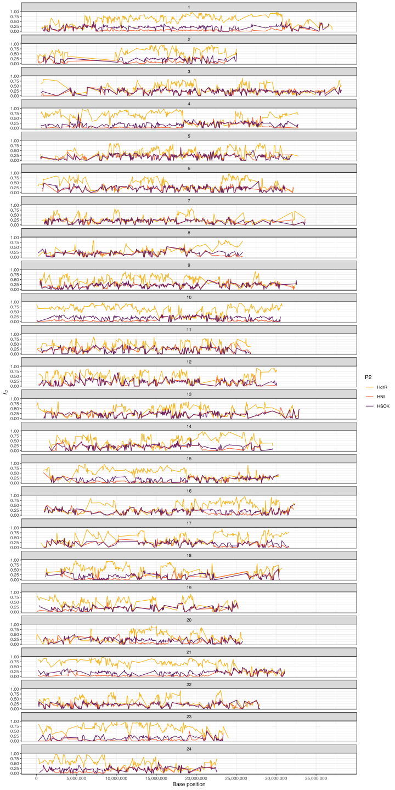
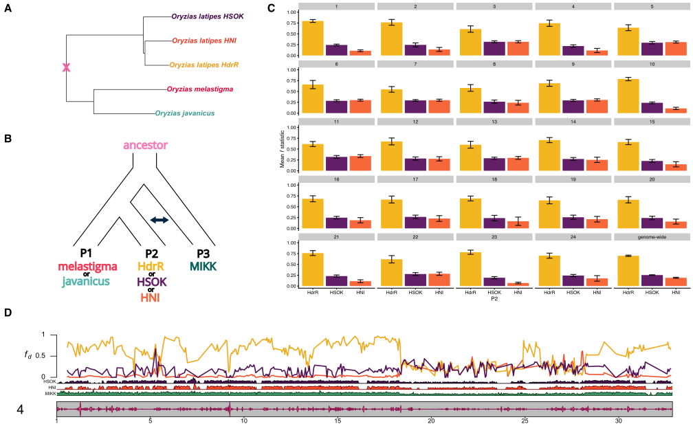

Introgression
2021-03-18
We want to determine the extent to which the MIKK panel shows evidence of introgression with other medaka populations, specifically the Northern and Korean medaka strains.
1 Setup
library(here)
source(here::here("code", "scripts", "introgression", "source.R"))1.1 Working directory
Working directory on EBI cluster: /hps/research1/birney/users/ian/mikk_paper
1.2 Create Singularity containers
container_dir=../sing_conts
# load Singularity (version 3.5.0)
module load singularity
for package in $( echo r-base_4.0.4 bcftools_1.9 numpy_1.15.4 bash_3.0.22 bioconductor_3.12 ) ; do
if [[ ! -f $container_dir/$package.sif ]]; then
singularity build \
--remote \
$container_dir/$package.sif \
envs/$package.def
fi ;
done1.3 renv
Install all required packages (using r-base in Singularity container).
container_dir=../sing_conts
baseR=r-base_4.0.4
bsub -Is "singularity shell $container_dir/$baseR"# Install all required packages
renv::restore()1.4 Copy scripts from Simon Martin’s GitHub repo
wget -P code/scripts/introgression https://raw.githubusercontent.com/simonhmartin/genomics_general/master/ABBABABAwindows.py
wget -P code/scripts/introgression https://raw.githubusercontent.com/simonhmartin/genomics_general/master/genomics.py2 Process multiple alignment data
2.1 Download from Ensembl
- Ensembl 103: Only includes Oryzias latipes HdrR and Oryzias melastigma (Indian medaka).
- Ensembl 102: Includes all target species. Use.
ftp://ftp.ensembl.org/pub/release-102/emf/ensembl-compara/multiple_alignments/50_fish.epo/README.50_fish.epo reads:
Alignments are grouped by japanese medaka hdrr chromosome, and then by coordinate system. Alignments containing duplications in japanese medaka hdrr are dumped once per duplicated segment. The files named .other.emf contain alignments that do not include any japanese medaka hdrr region. Each file contains up to 200 alignments.
ftp_dir=ftp://ftp.ensembl.org/pub/release-102/emf/ensembl-compara/multiple_alignments/50_fish.epo/
target_dir=../introgression/release-102
mkdir -p $target_dir/raw
# download, exlcuding *.other* files
wget -P $target_dir/raw $ftp_dir/* -R "*other*"
# unzip into new directory (excluding "other")
$target_dir/unzipped
mkdir -p $target_dir/unzipped
for i in $(find $target_dir/raw/50_fish.epo.[0-9]*); do
name=$(basename $i | cut -f3,4 -d'.');
bsub "zcat $i > $target_dir/unzipped/$name";
done- NOTE: File 6_2.emf is in a completely different format, with CIGAR strings instead of the normal SEQ, TREE, ID and DATA segments. It appears the file is corrupted.
- The 6_2 file in
release 101is unaffected. Remove allrelease 102chr 6 files and replace withrelease 101files.
# remove release 102 files for chr 6
rm $target_dir/unzipped/6_*
# download chr 6 files from release 101
ftp_dir_101=ftp://ftp.ensembl.org/pub/release-101/emf/ensembl-compara/multiple_alignments/50_fish.epo/
target_dir_101=../introgression/release-101
mkdir -p $target_dir_101/raw
wget -P $target_dir_101/raw $ftp_dir_101/50_fish.epo.6_*
# unzip
mkdir -p $target_dir_101/unzipped
for i in $(find $target_dir_101/raw/*); do
name=$(basename $i | cut -f3,4 -d'.') ;
zcat $i > $target_dir_101/unzipped/$name ;
done
# copy over to release 102 directory
cp $target_dir_101/unzipped/* $target_dir/unzipped2.2 Generate tree plot
Copy tree to file
tree_file=data/introgression/release_102_tree.txt
awk "NR==58,NR==205" $target_dir/raw/README.50_fish.epo \
> $tree_fileThen manually edit $tree_file using regex to find spaces and replace them with "_": {bash} (?<=[a-z])( )(?=[a-z])
phylo_tree <- ape::read.tree(file = here::here("data", "introgression", "release_102_tree.txt"))2.2.1 Full tree
# Colour all Oryzias
ids <- phylo_tree$tip.label[grep("Oryzias", phylo_tree$tip.label)]
# get indices of edges descending from MRCA (determined through trial and error)
oryzias_nodes <- seq(35, 42)
all_med_col <- ifelse(1:length(phylo_tree[["edge.length"]]) %in% oryzias_nodes, "#E84141", "black")
# set colours for tip labels
all_med_tip <- ifelse(phylo_tree$tip.label %in% ids, "#E84141", "black")
# plot
ape::plot.phylo(phylo_tree,
use.edge.length = T,
edge.color = all_med_col,
tip.color = all_med_tip,
font = 4)
# Save to repo
png(file= file.path(plots_dir, "tree_all.png"),
width=22,
height=25,
units = "cm",
res = 400)
ape::plot.phylo(phylo_tree,
use.edge.length = T,
edge.color = all_med_col,
tip.color = all_med_tip,
font = 4)
dev.off()2.2.2 Oryzias only
New tree file created manually to extract Oryzias fishes only, and replace reference codes (e.g. “ASM223467v1”) with line names (e.g. “HdrR”).
in_file = here::here("data/introgression/release_102_tree_oryzias_only.txt")
# Read in
phylo_tree <- ape::read.tree(file = in_file)
# Set colours
phylo_cols <- c("#55b6b0", "#f33a56", "#f3b61f", "#f6673a", "#631e68")
# Plot
ape::plot.phylo(phylo_tree,
font = 4,
tip.color = phylo_cols)
out_file = here::here(plots_dir, "tree_oryzias.png")
# Save
png(file=out_file,
width=2700,
height=1720,
units = "px",
res = 400)
ape::plot.phylo(phylo_tree,
font = 4,
tip.color = phylo_cols)
dev.off()2.2.2.1 Add cross for ancestor
in_file = here::here(plots_dir, "tree_oryzias.png")
out_file = here::here(plots_dir, "tree_oryzias_with_ancestor.png")
tree_path = in_file
ggdraw() +
draw_image(tree_path) +
draw_label("x",
x = 0.152,
y = 0.52,
fontface = "bold",
color = "#f77cb5",
size = 25)
ggsave(out_file,
width=15.69,
height=10,
units = "cm",
dpi = 400)knitr::include_graphics(basename(out_file))2.3 Divide by segment
target_dir=../introgression/release-102
segments_dir=$target_dir/segmented
date=20210312
script=code/scripts/introgression/20200907_extract-emf-segments.sh
mkdir -p $segments_dir
for i in $(find $target_dir/unzipped/* ); do
# get basename
bname=$(basename $i);
bname_short=$(echo ${bname::-4} );
# get chromosome
chr=$(echo $bname | cut -f1 -d"_" );
# make directory for each EMF file
new_path=$(echo $segments_dir/$bname_short );
if [ ! -d "$new_path" ]; then
mkdir $new_path;
fi
# get segment count
segment_count=$(grep "^DATA" $i | wc -l );
# get segment start and end for each file
for j in $(seq 1 $segment_count ); do
bsub \
-o ../log/$date\segment_$bname_short\_$j.out \
-e ../log/$date\segment_$bname_short\_$j.err \
"$script $i $j $new_path "
done;
done
# How many files?
find $segments_dir/*/*.data.txt | wc -l
# 8951
find $in_dir/*/*_1.data.txt | wc -l
# 4341
find $in_dir/*/*_-1.data.txt | wc -l
# 46102.4 Run analysis pipeline with snakemake
snmk_proj="introgression"
module load singularity
conda activate snakemake
snakemake \
--jobs 5000 \
--latency-wait 100 \
--cluster-config code/snakemake/$snmk_proj/config/cluster.json \
--cluster 'bsub -g /snakemake_bgenie -J {cluster.name} -n {cluster.n} -M {cluster.memory} -o {cluster.output} -e {cluster.error}' \
--keep-going \
--rerun-incomplete \
--use-conda \
--use-singularity \
-s code/snakemake/$snmk_proj/Snakefile \
-p3 f statistic analysis
3.1 Read in data
data_file = here::here("data", "introgression", "20210315_f_stat_final.txt")
# Read in data
final_df <- read.table(data_file,
header = T,
sep = "\t",
as.is = T)
final_df <- final_df %>%
dplyr::mutate(across(P2,
~factor(.x, levels = fish_order))) %>%
dplyr::mutate(chr = factor(chr, levels = chr_order))
knitr::kable(head(final_df))| P1 | P2 | P3 | chr | d_stat | z_score | admix_f | f_ci_lower | f_ci_upper |
|---|---|---|---|---|---|---|---|---|
| javanicus | HdrR | MIKK | all | 0.9072306 | 324.06735 | 0.7093524 | 0.6943606 | 0.7243441 |
| javanicus | HdrR | MIKK | 1 | 0.9422313 | 162.46960 | 0.8090713 | 0.7776743 | 0.8404682 |
| javanicus | HdrR | MIKK | 2 | 0.9128441 | 57.55129 | 0.7668972 | 0.6931469 | 0.8406474 |
| javanicus | HdrR | MIKK | 3 | 0.8869725 | 76.53532 | 0.6217246 | 0.5501172 | 0.6933320 |
| javanicus | HdrR | MIKK | 4 | 0.9318431 | 72.86056 | 0.7503846 | 0.6643958 | 0.8363734 |
| javanicus | HdrR | MIKK | 5 | 0.8879805 | 69.67407 | 0.6565419 | 0.5865893 | 0.7264945 |
3.2 Create DF with mean melastigma and javanicus
cor_df <- final_df %>%
# filter for when P1 is another Oryzias, and P2
dplyr::filter(P1 %in% c("javanicus", "melastigma") & P2 != "MIKK" & P3 == "MIKK") %>%
# pivot to put the admixture_f stat for melastigma and javanicus in the same row
tidyr::pivot_wider(id_cols = c("P2", "chr"),
names_from = P1,
values_from = c(admix_f, f_ci_lower, f_ci_upper))
cor_df$chr <- as.character(cor_df$chr)
cor_df$chr <- ifelse(cor_df$chr == "all", "genome-wide", cor_df$chr)
chr_order_plot <- c(seq(1,24), "genome-wide")
cor_df$chr <- factor(cor_df$chr, levels = chr_order_plot)
cor_df_means <- cor_df %>%
# apply across rows
dplyr::rowwise() %>%
# get means for f and CIs
dplyr::mutate(mean_f = mean(c(admix_f_javanicus, admix_f_melastigma)),
mean_ci_upper = mean(c(f_ci_upper_javanicus, f_ci_upper_melastigma)),
mean_ci_lower = mean(c(f_ci_lower_javanicus, f_ci_lower_melastigma))) %>%
# set stats at a maximum of 1
dplyr::mutate(across(c("mean_f", "mean_ci_upper", "mean_ci_lower"),
~dplyr::if_else(.x > 1,
1,
.x)))
knitr::kable(head(cor_df_means))| P2 | chr | admix_f_javanicus | admix_f_melastigma | f_ci_lower_javanicus | f_ci_lower_melastigma | f_ci_upper_javanicus | f_ci_upper_melastigma | mean_f | mean_ci_upper | mean_ci_lower |
|---|---|---|---|---|---|---|---|---|---|---|
| HdrR | genome-wide | 0.7093524 | 0.6860648 | 0.6943606 | 0.6712495 | 0.7243441 | 0.7008800 | 0.6977086 | 0.7126121 | 0.6828051 |
| HdrR | 1 | 0.8090713 | 0.7831495 | 0.7776743 | 0.7466954 | 0.8404682 | 0.8196036 | 0.7961104 | 0.8300359 | 0.7621849 |
| HdrR | 2 | 0.7668972 | 0.7621796 | 0.6931469 | 0.6999464 | 0.8406474 | 0.8244128 | 0.7645384 | 0.8325301 | 0.6965466 |
| HdrR | 3 | 0.6217246 | 0.5968322 | 0.5501172 | 0.5217981 | 0.6933320 | 0.6718664 | 0.6092784 | 0.6825992 | 0.5359576 |
| HdrR | 4 | 0.7503846 | 0.7399951 | 0.6643958 | 0.6811117 | 0.8363734 | 0.7988785 | 0.7451899 | 0.8176260 | 0.6727538 |
| HdrR | 5 | 0.6565419 | 0.6241430 | 0.5865893 | 0.5565435 | 0.7264945 | 0.6917426 | 0.6403425 | 0.7091186 | 0.5715664 |
3.3 Plot
fstat_plot = cor_df_means %>%
ggplot(aes(P2, mean_f, fill = P2)) +
geom_col() +
geom_errorbar(aes(ymin = mean_ci_lower,
ymax = mean_ci_upper),
position = position_dodge(0.9),
width = 0.25) +
guides(fill = F) +
facet_wrap(~chr) +
ylim(0,1) +
ylab(expression(paste("Mean ", italic("f"), " statistic"))) +
theme_cowplot(font_size = 8) +
scale_fill_manual(values = pal_abba)
fstat_plot
out_file = here::here(plots_dir, "20210315_f_stat")
# PNG
ggsave(filename = paste(out_file, ".png", sep = ""),
device = "png",
width = 24.75,
height = 19.5,
units = "cm",
dpi = 500)
# SVG
ggsave(filename = paste(out_file, ".svg", sep = ""),
device = "svg",
width = 24.75,
height = 19.5,
units = "cm")4 Sliding windows ABBA BABA
4.1 Read in data
in_file = here::here("data", "introgression", "abba_sliding_final", "50000_100.txt")
# Read in data
df = readr::read_csv(in_file) %>%
dplyr::arrange(p1, p2, scaffold, start)
# Convert fd to 0 if D < 0
df$fd = ifelse(df$D < 0,
0,
df$fd)
# Change names
df = df %>%
dplyr::mutate(p2 = recode(df$p2, hdrr = "HdrR", hni = "HNI", hsok = "HSOK"))4.2 Plot
4.2.1 Standard
df %>%
dplyr::filter(p1 == "melastigma") %>%
ggplot() +
geom_line(aes(mid, fd, colour = p2)) +
facet_wrap(~scaffold, nrow = 24, ncol = 1) +
scale_colour_manual(values = pal_abba) +
theme_bw(base_size = 10) +
scale_x_continuous(breaks = c(0, 5000000, 10000000, 15000000, 20000000, 25000000, 30000000, 35000000),
labels = scales::comma) +
xlab("Base position") +
ylab(bquote(italic(f[d]))) +
labs(colour = "P2")
out_file = here::here(plots_dir, "20210317_abba_sliding.png")
ggsave(filename = out_file,
device = "png",
width = 24.75,
height = 50,
units = "cm",
dpi = 300)4.2.2 Karyoplot
4.2.2.1 Make custom chromosome scaffold
# Get chromosome lengths
med_chr_lens = read.table(here("data", "Oryzias_latipes.ASM223467v1.dna.toplevel.fa_chr_counts.txt"),
col.names = c("chr", "end"))
# Add start
med_chr_lens$start = 1
# Reorder
med_chr_lens = med_chr_lens %>%
dplyr::select(chr, start, end)
# Create custom genome
med_genome = regioneR::toGRanges(med_chr_lens)4.2.2.2 Process ABBA sliding windows data
in_file = here::here("data", "introgression", "abba_sliding_final", "50000_100.txt")
# Read in data
df = readr::read_csv(in_file) %>%
dplyr::arrange(p1, p2, scaffold, start)
# Convert fd to 0 if D < 0
df$fd = ifelse(df$D < 0,
0,
df$fd)
# Change names
df = df %>%
dplyr::mutate(p2 = recode(df$p2, hdrr = "HdrR", hni = "HNI", hsok = "HSOK"))
# Get df with mean of melastigma/javanicus
df_kp = df %>%
pivot_wider(id_cols = c(scaffold, start, end, mid, p2), names_from = p1, values_from = fd) %>%
# get mean of melastigma/javanicus
dplyr::mutate(mean_fd = rowMeans(dplyr::select(., melastigma, javanicus), na.rm = T)) %>%
dplyr::arrange(p2, scaffold, start)
knitr::kable(head(df_kp))| scaffold | start | end | mid | p2 | javanicus | melastigma | mean_fd |
|---|---|---|---|---|---|---|---|
| 1 | 650001 | 700000 | 666130 | HdrR | NA | 0.1231 | 0.12310 |
| 1 | 700001 | 750000 | 721651 | HdrR | NA | 0.2357 | 0.23570 |
| 1 | 750001 | 800000 | 774678 | HdrR | NA | 0.1636 | 0.16360 |
| 1 | 950001 | 1000000 | 974734 | HdrR | NA | 0.2203 | 0.22030 |
| 1 | 1000001 | 1050000 | 1028780 | HdrR | NA | 0.2935 | 0.29350 |
| 1 | 1050001 | 1100000 | 1075868 | HdrR | 0.4066 | 0.2985 | 0.35255 |
4.2.2.3 Read in SNP density data
4.2.2.3.1 HNI and HSOK
in_file = here::here("data/introgression/hni_hsok.txt.gz")
# Read in file on local
ol_ranges_df = read.table(in_file,
header = T,
sep = "\t",
as.is = T)
ol_ranges_df_long = ol_ranges_df %>%
tidyr::pivot_longer(cols = c(hni, hsok), names_to = "line", values_to = "present")
ol_ranges_list = split(ol_ranges_df_long, f = ol_ranges_df_long$line)
ol_ranges_list = lapply(ol_ranges_list, function(x){
# remove NAs
df = x %>%
tidyr::drop_na(present)
# convert to GRanges object
ol_ranges = GenomicRanges::makeGRangesFromDataFrame(df,
ignore.strand = T,
seqnames.field = "chr",
start.field = "pos",
end.field = "pos")
return(ol_ranges)
})4.2.2.3.2 MIKK
in_file = here::here("data/introgression/mikk.txt.gz")
# Read in file on local
mikk_ranges_df = read.table(in_file,
col.names = c("chr", "pos"),
sep = "\t",
as.is = T)
# Convert to GRanges object
mikk_ranges = GenomicRanges::makeGRangesFromDataFrame(mikk_ranges_df,
ignore.strand = T,
seqnames.field = "chr",
start.field = "pos",
end.field = "pos")4.2.2.4 Get exon density
# Get list of exons from biomaRt
## Select dataset
olat_mart = biomaRt::useEnsembl(biomart = "ensembl", dataset = "olatipes_gene_ensembl")
## Get attributes of interest (exon ID, chr, start, end)
exons <- biomaRt::getBM(attributes = c("chromosome_name", "ensembl_gene_id", "ensembl_transcript_id", "transcript_start", "transcript_end", "transcript_length", "ensembl_exon_id", "rank", "strand", "exon_chrom_start", "exon_chrom_end", "cds_start", "cds_end"),
mart = olat_mart)
## Convert exons to GRanges
ex_ranges = GenomicRanges::makeGRangesFromDataFrame(exons,
ignore.strand = T,
seqnames.field = "chromosome_name",
start.field = "exon_chrom_start",
end.field = "exon_chrom_end")4.2.2.5 All chromosomes
file_out = file.path(plots_dir, "20210318_fd_with_density_all.png")# Save
png(file=file_out,
width=8500,
height=13500,
units = "px",
res = 400)
# Plot
kp = plotKaryotype(med_genome)
# Add base numbers
karyoploteR::kpAddBaseNumbers(kp, tick.dist = 5000000, cex = 0.3)
# Add data backgrounds
karyoploteR::kpDataBackground(kp, r0=0, r1 = 1, color = "white")
# Add axis label
kpAxis(kp, r0=0.3, r1 = 1, cex = 0.4)
# Add fd data
karyoploteR::kpLines(kp,
chr = df_kp$scaffold[df_kp$p2 == "HNI"],
x = df_kp$mid[df_kp$p2 == "HNI"],
y = df_kp$mean_fd[df_kp$p2 == "HNI"],
col = "#F6673A",
r0=0.3, r1 = 1)
karyoploteR::kpLines(kp,
chr = df_kp$scaffold[df_kp$p2 == "HdrR"],
x = df_kp$mid[df_kp$p2 == "HdrR"],
y = df_kp$mean_fd[df_kp$p2 == "HdrR"],
col = "#F3B61F",
r0=0.3, r1 = 1)
karyoploteR::kpLines(kp,
chr = df_kp$scaffold[df_kp$p2 == "HSOK"],
x = df_kp$mid[df_kp$p2 == "HSOK"],
y = df_kp$mean_fd[df_kp$p2 == "HSOK"],
col = "#631E68",
r0=0.3, r1 = 1)
# Add SNP density data
kpPlotDensity(kp, data=mikk_ranges, col = "#49A379",
r0=0, r1=0.1,
window.size = 25000)
kpPlotDensity(kp, data=ol_ranges_list$hni, col = "#F6673A",
r0=0.1, r1=0.2,
window.size = 25000)
kpPlotDensity(kp, data=ol_ranges_list$hsok, col = "#631E68",
r0=0.2, r1=0.3,
window.size = 25000)
#kpPlotDensity(kp, data=ol_ranges_list$hdrr, col = "#F3B61F",
# r0=0.45, r1=0.6,
# window.size = 25000)
# Add exon density to ideogram
kpPlotDensity(kp, data=ex_ranges, col = "#f77cb5",
data.panel = "ideogram",
window.size = 25000,
r0 = 0.5, r1 = 1)
kpPlotDensity(kp, data=ex_ranges, col = "#f77cb5",
data.panel = "ideogram",
window.size = 25000,
r0 = 0.5, r1 = 0)
# Add labels
kpAddLabels(kp, labels="MIKK",
r0=0, r1=0.05,
label.margin = 0.001,
cex = 0.4)
kpAddLabels(kp, labels="HNI",
r0=0.1, r1=0.15,
label.margin = 0.001,
cex = 0.4)
kpAddLabels(kp, labels="HSOK",
r0=0.2, r1=0.25,
label.margin = 0.001,
cex = 0.4)
#kpAddLabels(kp, labels="HdrR",
# r0=0.45, r1=0.6,
# cex = 0.4)
kpAddLabels(kp, labels=bquote(italic(f[d])),
r0=0.3, r1=1,
label.margin = 0.035,
cex = 0.6)
dev.off()knitr::include_graphics(basename(file_out))
4.2.2.6 Chromosome 4
out_file = file.path(plots_dir, "20210318_fd_with_density_chr_4.png")png(file=out_file,
width=5500,
height=1186,
units = "px",
res = 400)
# Plot
kp = plotKaryotype(med_genome, chromosomes = "4", cex = 1.5)
# Add base numbers
karyoploteR::kpAddBaseNumbers(kp, tick.dist = 5000000, cex = 0.7)
# Add data backgrounds
karyoploteR::kpDataBackground(kp, r0=0, r1 = 1, color = "white")
# Add axis label
kpAxis(kp, r0=0.3, r1 = 1, cex = 0.8)
# Add fd data
lwd = 2
karyoploteR::kpLines(kp,
chr = df_kp$scaffold[df_kp$p2 == "HNI"],
x = df_kp$mid[df_kp$p2 == "HNI"],
y = df_kp$mean_fd[df_kp$p2 == "HNI"],
col = "#F6673A",
r0=0.3, r1 = 1,
lwd = lwd)
karyoploteR::kpLines(kp,
chr = df_kp$scaffold[df_kp$p2 == "HdrR"],
x = df_kp$mid[df_kp$p2 == "HdrR"],
y = df_kp$mean_fd[df_kp$p2 == "HdrR"],
col = "#F3B61F",
r0=0.3, r1 = 1,
lwd = lwd)
karyoploteR::kpLines(kp,
chr = df_kp$scaffold[df_kp$p2 == "HSOK"],
x = df_kp$mid[df_kp$p2 == "HSOK"],
y = df_kp$mean_fd[df_kp$p2 == "HSOK"],
col = "#631E68",
r0=0.3, r1 = 1,
lwd = lwd)
# Add SNP density data
kpPlotDensity(kp, data=mikk_ranges, col = "#49A379",
r0=0, r1=0.1,
window.size = 25000)
kpPlotDensity(kp, data=ol_ranges_list$hni, col = "#F6673A",
r0=0.1, r1=0.2,
window.size = 25000)
kpPlotDensity(kp, data=ol_ranges_list$hsok, col = "#631E68",
r0=0.2, r1=0.3,
window.size = 25000)
#kpPlotDensity(kp, data=ol_ranges_list$hdrr, col = "#F3B61F",
# r0=0.45, r1=0.6,
# window.size = 25000)
# Add exon density to ideogram
kpPlotDensity(kp, data=ex_ranges, col = "#f77cb5",
data.panel = "ideogram",
window.size = 25000,
r0 = 0.5, r1 = 1)
kpPlotDensity(kp, data=ex_ranges, col = "#f77cb5",
data.panel = "ideogram",
window.size = 25000,
r0 = 0.5, r1 = 0)
# Add labels
kpAddLabels(kp, labels="MIKK",
r0=0, r1=0.05,
label.margin = 0.001,
cex = 0.5)
kpAddLabels(kp, labels="HNI",
r0=0.1, r1=0.15,
label.margin = 0.001,
cex = 0.5)
kpAddLabels(kp, labels="HSOK",
r0=0.2, r1=0.25,
label.margin = 0.001,
cex = 0.5)
#kpAddLabels(kp, labels="HdrR",
# r0=0.45, r1=0.6,
# cex = 0.4)
kpAddLabels(kp, labels=bquote(italic(f[d])),
r0=0.3, r1=1,
label.margin = 0.035,
cex = 1)
dev.off()knitr::include_graphics(basename(out_file))
5 Final figure
5.1 ABBA BABA diagram
Created with Vectr and saved here: plots/introgression/20210318_abba_diagram.svg
5.2 Compile all
abba_diagram = here::here(plots_dir, "abba_diagram.png")
tree = here::here(plots_dir, "tree_oryzias_with_ancestor.png")
karyo_chr4 = here::here(plots_dir, "20210318_fd_with_density_chr_4.png")
final_abba = ggdraw() +
draw_image(tree,
x = 0, y = .7, width = .4, height = .35, vjust = .1, hjust = -.1, scale = 1.2) +
draw_image(karyo_chr4,
x = 0, y = 0, width = 1, height = 0.3, scale = 1.2) +
draw_plot(fstat_plot,
x = .4, y = .3, width = .6, height = .7) +
draw_image(abba_diagram,
x = 0, y = .3, width = .4, height = .35, vjust = -.05, scale = 1.1) +
draw_plot_label(label = c("A", "B", "C", "D"), size = 16,
x = c(0, 0, .38, 0), y = c(1, .7, 1, .3))
final_abba
ggsave(here::here(plots_dir, "20210318_final_figure.png"),
width = 35,
height = 21.875,
units = "cm",
dpi = 500)